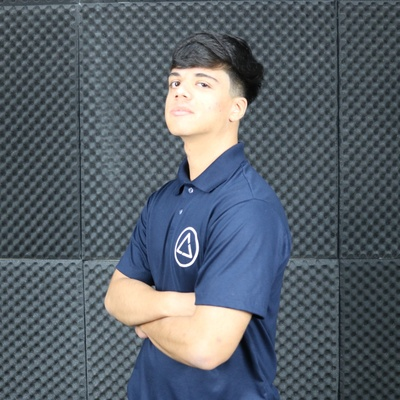

Currículo
Dados Pessoais

Nome:
Gabriel Carvalho de Toledo e Silva
Data de Nascimento:
18/05/2004
Residência:
Taubaté, São Paulo
Sobre Mim
Olá! Sou Gabriel Carvalho, estudante de Engenharia de Computação na Universidade Federal de Itajubá (UNIFEI).
Tenho interesse em desenvolvimento de software e tecnologia. Gosto de aprender coisas novas, resolver problemas e desenvolver projetos que me permitam colocar meus conhecimentos em prática.
Formação Acadêmica
Engenharia de Computação
Universidade Federal de Itajubá (UNIFEI)
Itajubá, MG, Brasil
Em andamento — 4º período
Ensino Médio
Colégio Jardim das Nações (CJN)
Taubaté, SP, Brasil
2019 — 2021
Habilidades
Linguagens de Programação
C | C++ | Java
Ferramentas
Git e GitHub | VS Code
Soft Skills
Comunicação | Trabalho em equipe | Adaptabilidade | Aprendizado rápido